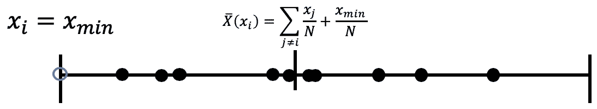

数值查询是数据库最基础的数据查询类型，将其定义为：f : N ∣ X ∣ → R k f:\mathbb{N}^{|\mathcal{X}|} \to \mathbb{R}^k f : N ∣ X ∣ → R k ℓ 1 \ell_1 ℓ 1
定义3.1 （ℓ 1 \ell_1 ℓ 1 方法 f : N ∣ X ∣ → R k f:\mathbb{N}^{|\mathcal{X}|} \to \mathbb{R}^k f : N ∣ X ∣ → R k ℓ 1 \ell_1 ℓ 1 Δ f = max x , y ∈ N ∣ X ∣ , ∥ x − y ∥ 1 = 1 ∥ f ( x ) − f ( y ) ∥ 1
\Delta f = \max_{x,y\in\mathbb{N}^{|\mathcal{X}|},\Vert x-y\Vert _1=1}\Vert f(x)-f(y)\Vert _1
Δ f = x , y ∈ N ∣ X ∣ , ∥ x − y ∥ 1 = 1 max ∥ f ( x ) − f ( y ) ∥ 1
【注：该处在哈佛大学的课程中表示为：Δ f = max x , y ∈ N ∣ X ∣ , ∥ x − y ∥ 1 = 1 ∣ f ( x ) − f ( y ) ∣ \Delta f = \max_{x,y\in\mathbb{N}^{|\mathcal{X}|},\Vert x-y\Vert _1=1}| f(x)-f(y)| Δ f = max x , y ∈ N ∣ X ∣ , ∥ x − y ∥ 1 = 1 ∣ f ( x ) − f ( y ) ∣ ℓ 1 \ell_1 ℓ 1 定义 3.1 中形式。个人认为，对于以数值形式作为函数的输出，其敏感度计算应遵循哈弗大学课程中的计算公式。对于以分量形式作为函数的输出，应使用本书计算公式。下图使用哈佛大学课程中的举例，用平均值作为函数 f f f

】
函数 f f f ℓ 1 \ell_1 ℓ 1 f f f
定义3.2（拉普拉斯分布） 以0为中心，以 b b b
L a p ( x ∣ b ) = 1 2 b exp ( − ∣ x ∣ b )
Lap(x|b) = \frac{1}{2b}\exp(-\frac{|x|}{b})
L a p ( x ∣ b ) = 2 b 1 exp ( − b ∣ x ∣ )
这个分布的方差是 σ 2 = 2 b 2 \sigma^2=2b^2 σ 2 = 2 b 2 L a p ( b ) Lap(b) L a p ( b ) b b b L a p ( b ) Lap(b) L a p ( b ) X ∽ L a p ( b ) X \backsim Lap(b) X ∽ L a p ( b )
拉普拉斯分布是指数分布的对称版本。
我们现在定义拉普拉斯机制。顾名思义，拉普拉斯机制将简单地计算 f f f f f f 注：此处为个人理解补充进翻译中，原文省略了指代与解释。 )。噪声的尺度将校准为 f f f ε \varepsilon ε [ 1 ] \ ^{[1]} [ 1 ]
（原书注[1]: 或者，使用方差校准为 Δ f l n ( 1 / δ ) / ε \Delta fln(1/\delta)/\varepsilon Δ f l n ( 1 / δ ) / ε ( ε , δ ) (\varepsilon,\delta) ( ε , δ )
定义3.3 （拉普拉斯机制） 给定任意方法 f : N ∣ X ∣ → R k f:\mathbb{N}^{|\mathcal{X}|} \to \mathbb{R}^k f : N ∣ X ∣ → R k M L ( x , f ( ⋅ ) , ε ) = f ( x ) + ( Y 1 , … , Y k )
\mathcal{M}_L(x,f(\cdot),\varepsilon)=f(x) + (Y_1,\dots,Y_k)
M L ( x , f ( ⋅ ) , ε ) = f ( x ) + ( Y 1 , … , Y k ) Y i Y_i Y i L a p ( Δ f / ε ) Lap(\Delta f/\varepsilon) L a p ( Δ f / ε )
定理 3.6 拉普拉斯机制是 ( ε , 0 ) (\varepsilon,0) ( ε , 0 )
【证明】 ：设 x ∈ N ∣ X ∣ , y ∈ N ∣ X ∣ x \in \mathbb{N}^{|\mathcal{X}|},y \in \mathbb{N}^{|\mathcal{X}|} x ∈ N ∣ X ∣ , y ∈ N ∣ X ∣ ∥ x − y ∥ 1 ≤ 1 \Vert x-y\Vert _1 \leq 1 ∥ x − y ∥ 1 ≤ 1 f ( ⋅ ) f(\cdot) f ( ⋅ ) f : N ∣ X ∣ → R k f:\mathbb{N}^{|\mathcal{X}|} \to \mathbb{R}^k f : N ∣ X ∣ → R k p x p_x p x M L ( x , f , ε ) \mathcal{M}_L(x,f,\varepsilon) M L ( x , f , ε ) p y p_y p y M L ( y , f , ε ) \mathcal{M}_L(y,f,\varepsilon) M L ( y , f , ε ) z z z
p x ( z ) p y ( z ) = ∏ i = 1 k ( exp ( − ε ∣ f ( x ) i − z i ∣ Δ f ) exp ( − ε ∣ f ( y ) i − z i ∣ Δ f ) ) = ∏ i = 1 k exp ( ε ( ∣ f ( y ) i − z i ∣ − ∣ f ( x ) i − z i ∣ ) Δ f ) ≤ ∏ i = 1 k exp ( ε ∣ f ( x ) i − f ( y ) i ∣ Δ f ) = exp ( ε ∥ f ( x ) − f ( y ) ∥ 1 Δ f ) ≤ exp ( ε )
\begin{aligned}
\frac{p_x(z)}{p_y(z)} &= \prod_{i=1}^{k}\Bigg(\frac{\exp(-\frac{\varepsilon|f(x)_i-z_i|}{\Delta f})}{\exp(-\frac{\varepsilon|f(y)_i-z_i|}{\Delta f})} \Bigg)\\
&= \prod_{i=1}^{k}\exp\Bigg( \frac{\varepsilon(|f(y)_i-z_i|-|f(x)_i-z_i|)}{\Delta f} \Bigg)\\
&\leq \prod_{i=1}^{k}\exp\Bigg(\frac{\varepsilon|f(x)_i-f(y)_i|}{\Delta f} \Bigg)\\
&= \exp\Bigg(\frac{\varepsilon\Vert f(x)-f(y)\Vert _1}{\Delta f} \Bigg)\\
&\leq \exp(\varepsilon)
\end{aligned}
p y ( z ) p x ( z ) = i = 1 ∏ k ( exp ( − Δ f ε ∣ f ( y ) i − z i ∣ ) exp ( − Δ f ε ∣ f ( x ) i − z i ∣ ) ) = i = 1 ∏ k exp ( Δ f ε ( ∣ f ( y ) i − z i ∣ − ∣ f ( x ) i − z i ∣ ) ) ≤ i = 1 ∏ k exp ( Δ f ε ∣ f ( x ) i − f ( y ) i ∣ ) = exp ( Δ f ε ∥ f ( x ) − f ( y ) ∥ 1 ) ≤ exp ( ε )
第一个不等式由三角不等式推导得来，最后一个不等式是由敏感度定义得到，即：∥ x − y ∥ 1 ≤ 1 \Vert x-y\Vert _1 \leq 1 ∥ x − y ∥ 1 ≤ 1 p x ( z ) p y ( z ) ≥ exp ( − ε ) \frac{p_x(z)}{p_y(z)} \geq \exp(-\varepsilon) p y ( z ) p x ( z ) ≥ exp ( − ε )
【定理 3.6 证毕】
【补充1: 由 Laplace机制的定义:
M L ( x , f ( ⋅ ) , ε ) = f ( x ) + ( Y 1 , … , Y k )
\mathcal{M}_L(x,f(\cdot),\varepsilon)=f(x) + (Y_1,\dots,Y_k)
M L ( x , f ( ⋅ ) , ε ) = f ( x ) + ( Y 1 , … , Y k )
为直观表示，使用随机变量的分量形式。即：Y → = ( Y 1 , … , Y k ) \overrightarrow{Y}=(Y_1,\dots,Y_k) Y = ( Y 1 , … , Y k ) f : N ∣ X ∣ → R k = f ( x ) → = ( f ( x ) 1 , . . . , f ( x ) k ) f:\mathbb{N}^{|\mathcal{X}|} \to \mathbb{R}^k=\overrightarrow{f(x)}=(f(x)_1,...,f(x)_k) f : N ∣ X ∣ → R k = f ( x ) = ( f ( x ) 1 , . . . , f ( x ) k )
p x ( z → ) = Pr [ M L ( x , f ( ⋅ ) , ε ) = z → ] = Pr [ f ( x ) → + Y → = z → ] = Pr [ Y → = z → − f ( x ) → ] = ε 2 Δ f exp ( − ε ∣ f ( x ) → − z → ∣ Δ f ) = ε 2 Δ f ∏ i = 1 k exp ( − ε ∣ f ( x ) i − z i ∣ Δ f )
\begin{aligned}
p_x(\overrightarrow{z}) &=\text{Pr}[\mathcal{M}_L(x,f(\cdot),\varepsilon)=\overrightarrow{z}]\\
&= \text{Pr}[\overrightarrow{f(x)} + \overrightarrow{Y} =\overrightarrow{z}]\\
&=\text{Pr}[\overrightarrow{Y}=\overrightarrow{z}-\overrightarrow{f(x)}]\\
&= \frac{\varepsilon}{2\Delta f}\exp\Big(-\frac{\varepsilon|\overrightarrow{f(x)}-\overrightarrow{z}|}{\Delta f}\Big)\\
&= \frac{\varepsilon}{2\Delta f}\prod_{i=1}^{k}\exp\Big(-\frac{\varepsilon|f(x)_i-z_i|}{\Delta f}\Big)
\end{aligned}
p x ( z ) = Pr [ M L ( x , f ( ⋅ ) , ε ) = z ] = Pr [ f ( x ) + Y = z ] = Pr [ Y = z − f ( x ) ] = 2 Δ f ε exp ( − Δ f ε ∣ f ( x ) − z ∣ ) = 2 Δ f ε i = 1 ∏ k exp ( − Δ f ε ∣ f ( x ) i − z i ∣ )
p x ( z ) p y ( z ) = ∏ i = 1 k ( exp ( − ε ∣ f ( x ) i − z i ∣ Δ f ) exp ( − ε ∣ f ( y ) i − z i ∣ Δ f ) ) \frac{p_x(z)}{p_y(z)} = \prod_{i=1}^{k}\Big(\frac{\exp(-\frac{\varepsilon|f(x)_i-z_i|}{\Delta f})}{\exp(-\frac{\varepsilon|f(y)_i-z_i|}{\Delta f})} \Big) p y ( z ) p x ( z ) = ∏ i = 1 k ( exp ( − Δ f ε ∣ f ( y ) i − z i ∣ ) exp ( − Δ f ε ∣ f ( x ) i − z i ∣ ) ) 表示形式就是上式拉普拉斯分布的分量形式，即 ：p x ( z ) = ε 2 Δ f ∏ i = 1 k exp ( − ε ∣ f ( x ) i − z i ∣ Δ f ) p_x(z)= \frac{\varepsilon}{2\Delta f}\prod_{i=1}^{k}\exp\Big(-\frac{\varepsilon|f(x)_i-z_i|}{\Delta f}\Big) p x ( z ) = 2 Δ f ε ∏ i = 1 k exp ( − Δ f ε ∣ f ( x ) i − z i ∣ )
【补充2 ：由于 定义 2.3 (数据库之间距离) 定义了数据库 x x x y y y ℓ 1 \ell_1 ℓ 1 ∥ x − y ∥ 1 \Vert x-y\Vert _1 ∥ x − y ∥ 1
∥ x − y ∥ 1 = ∑ i = 1 ∣ X ∣ ∣ x i − y i ∣
\Vert x-y\Vert _1 = \sum_{i=1}^{|\mathcal{X}|}|x_i-y_i|
∥ x − y ∥ 1 = i = 1 ∑ ∣ X ∣ ∣ x i − y i ∣
故：上述证明中的 ∏ i = 1 k exp ( ε ∣ f ( x ) i − f ( y ) i ∣ Δ f ) = exp ( ε ∥ f ( x ) − f ( y ) ∥ 1 Δ f ) \prod_{i=1}^{k}\exp\Big(\frac{\varepsilon|f(x)_i-f(y)_i|}{\Delta f} \Big)=\exp\Big(\frac{\varepsilon\Vert f(x)-f(y)\Vert _1}{\Delta f} \Big) ∏ i = 1 k exp ( Δ f ε ∣ f ( x ) i − f ( y ) i ∣ ) = exp ( Δ f ε ∥ f ( x ) − f ( y ) ∥ 1 )
∏ i = 1 k exp ( ε ∣ f ( x ) i − f ( y ) i ∣ Δ f ) = exp ( ε ∑ i = 1 k ∣ f ( x ) i − f ( y ) i ∣ Δ f ) = exp ( ε ∥ f ( x ) − f ( y ) ∥ 1 Δ f )
\begin{aligned}
\prod_{i=1}^{k}\exp\Bigg(\frac{\varepsilon|f(x)_i-f(y)_i|}{\Delta f} \Bigg) &= \exp\Bigg(\frac{\varepsilon\sum_{i=1}^{k}|f(x)_i-f(y)_i|}{\Delta f} \Bigg)\\
&= \exp\Bigg(\frac{\varepsilon\Vert f(x)-f(y)\Vert _1}{\Delta f} \Bigg)
\end{aligned}
i = 1 ∏ k exp ( Δ f ε ∣ f ( x ) i − f ( y ) i ∣ ) = exp ( Δ f ε ∑ i = 1 k ∣ f ( x ) i − f ( y ) i ∣ ) = exp ( Δ f ε ∥ f ( x ) − f ( y ) ∥ 1 )
例3.1 计数查询 ：计数查询是“数据库中有多少个元素满足属性 P？”形式的查询。我们将一次又一次地回到这些查询，有时是纯形式，有时使用小数形式返回这些查询（“数据库中某元素的占比是多少....？”），有时带有权重（线性查询），有时带有稍微复杂的形式。（例如，对数据库中的每个元素应用 h : N ∣ X ∣ → [ 0 , 1 ] h:\mathbb{N}^{|\mathcal{X}|} \to [0,1] h : N ∣ X ∣ → [ 0 , 1 ] 定理3.6 的直接结果是，可以实现 ( ε , 0 ) (\varepsilon,0) ( ε , 0 ) 1 / ε 1/\varepsilon 1 / ε L a p ( 1 / ε ) Lap(1/\varepsilon) L a p ( 1 / ε ) 1 / ε 1/\varepsilon 1 / ε
固定但任意数量的 m m m m m m m m m m / ε m/\varepsilon m / ε ( ε , 0 ) (\varepsilon,0) ( ε , 0 )
有时我们将响应大量（可能是任意的）查询的问题称为查询发布问题。
例3.2 直方图查询 ：在查询在结构上不相交的特殊（但很常见）情况下，我们可以做得更好——我们不必让噪声随查询的数量而变化。直方图查询就是一个例子。在这种类型的查询中，数据整体（ N ∣ X ∣ \mathbb{N}^{|\mathcal{X}|} N ∣ X ∣ L a p ( 1 / ε ) Lap(1/\varepsilon) L a p ( 1 / ε )
为了了解一般查询的 Laplace 机制的准确性，我们使用以下有用的事实：
事实 3.7 ： 如果 Y ∽ L a p ( b ) Y \backsim Lap(b) Y ∽ L a p ( b )
Pr [ ∣ Y ∣ ≥ t ⋅ b ] = exp ( − t )
\text{Pr}[|Y| \geq t \cdot b] = \exp(-t)
Pr [ ∣ Y ∣ ≥ t ⋅ b ] = exp ( − t )
这个事实与布尔不等式（译者注：Union Bound，又称 Boole’s Inequality< 1 > ^{<1>} < 1 >
定理 3.8 ：设 f : N ∣ X ∣ → R k , y = M L ( x , f ( ⋅ ) , ε ) f:\mathbb{N}^{|\mathcal{X}|} \to \mathbb{R}^k,y=\mathcal{M}_L(x,f(\cdot),\varepsilon) f : N ∣ X ∣ → R k , y = M L ( x , f ( ⋅ ) , ε ) ∀ δ ∈ ( 0 , 1 ] \forall\delta \in (0,1] ∀ δ ∈ ( 0 , 1 ] Pr [ ∥ f ( x ) − y ∥ ∞ ≥ ln ( k δ ) ⋅ ( Δ f ε ) ] ≤ δ
\text{Pr}\Big[\Vert f(x)-y\Vert _\infty \geq \ln(\frac{k}{\delta})\cdot(\frac{\Delta f}{\varepsilon}) \Big] \leq \delta
Pr [ ∥ f ( x ) − y ∥ ∞ ≥ ln ( δ k ) ⋅ ( ε Δ f ) ] ≤ δ
【证明】 我们有：
Pr [ ∥ f ( x ) − y ∥ ∞ ≥ ln ( k δ ) ⋅ ( Δ f ε ) ] = Pr [ max i ∈ [ k ] ∣ Y i ∣ ≥ ln ( k δ ) ⋅ ( Δ f ε ) ] ≤ k ⋅ Pr [ ∣ Y i ∣ ≥ ln ( k δ ) ⋅ ( Δ f ε ) ] = k ⋅ ( δ k ) = δ
\begin{aligned}
\text{Pr}\Big[\Vert f(x)-y\Vert _\infty \geq \ln(\frac{k}{\delta})\cdot(\frac{\Delta f}{\varepsilon})\Big] &= \text{Pr}\Big[\max_{i \in [k]}|Y_i|\geq \ln(\frac{k}{\delta})\cdot(\frac{\Delta f}{\varepsilon}) \Big]\\
& \leq k\cdot \text{Pr}\Big[|Y_i|\geq \ln(\frac{k}{\delta})\cdot(\frac{\Delta f}{\varepsilon}) \Big] \\
&= k\cdot(\frac{\delta}{k})\\
&= \delta
\end{aligned}
Pr [ ∥ f ( x ) − y ∥ ∞ ≥ ln ( δ k ) ⋅ ( ε Δ f ) ] = Pr [ i ∈ [ k ] max ∣ Y i ∣ ≥ ln ( δ k ) ⋅ ( ε Δ f ) ] ≤ k ⋅ Pr [ ∣ Y i ∣ ≥ ln ( δ k ) ⋅ ( ε Δ f ) ] = k ⋅ ( k δ ) = δ
在证明中，第二个和最后的不等式是从拉普拉斯分布和事实3.7 中推导得到的。
（译者注<1> 布尔不等式 ：指对于全部事件的概率不大于单个事件的概率总和，对于事件 A 1 , A 2 , A 3 . . . : P ( ⋃ i A i ) ≤ ∑ i P ( A i ) A_1,A_2,A_3...: P(\bigcup_{i}A_i)\leq \sum_iP(A_i) A 1 , A 2 , A 3 . . . : P ( ⋃ i A i ) ≤ ∑ i P ( A i )
【补充3： 上一证明过程缺少 ℓ ∞ \ell_\infty ℓ ∞ 切比雪夫距离 ，如下定义：∥ x ∥ \Vert x \Vert ∥ x ∥ x x x
∥ x ∥ ∞ = lim k → ∞ ( ∑ i = 1 n ∣ p i − q i ∣ k ) 1 / k = max i ∈ [ k ] ∣ p i − q i ∣
\Vert x\Vert _{\infty}=\lim\limits_{k \to \infty}\Big(\sum_{i=1}^n|p_i-q_i|^k \Big)^{1/k}=\max_{i \in [k]}|p_i-q_i|
∥ x ∥ ∞ = k → ∞ lim ( i = 1 ∑ n ∣ p i − q i ∣ k ) 1 / k = i ∈ [ k ] max ∣ p i − q i ∣
】
【补充4: （定理3.8补充证明） 由 Laplace 机制可知 Y i ∽ L a p ( Δ f / ε ) Y_i \backsim Lap(\Delta f/\varepsilon) Y i ∽ L a p ( Δ f / ε ) y = M L ( x , f ( ⋅ ε ) = f ( x ) + ( Y 1 , … , Y k ) y=\mathcal{M}_L(x,f(\cdot\varepsilon)=f(x) + (Y_1,\dots,Y_k) y = M L ( x , f ( ⋅ ε ) = f ( x ) + ( Y 1 , … , Y k ) ∣ f ( x ) − y ∣ = ∣ ( Y 1 , . . . Y k ) ∣ |f(x) - y|= |(Y_1,...Y_k)| ∣ f ( x ) − y ∣ = ∣ ( Y 1 , . . . Y k ) ∣
又因切比雪夫距离定义：
∥ f ( x ) − y ∥ ∞ = m a x i ∈ k ∣ f ( x ) − y ∣ = m a x i ∈ k ∣ Y i ∣
\Vert f(x)-y\Vert _\infty=max_{i \in k}|f(x)-y|=max_{i \in k}|Y_i|
∥ f ( x ) − y ∥ ∞ = m a x i ∈ k ∣ f ( x ) − y ∣ = m a x i ∈ k ∣ Y i ∣
故证明的第一步可以由此推导出：
Pr [ ∥ f ( x ) − y ∥ ∞ ≥ ln ( k δ ) ⋅ ( Δ f ε ) ] = Pr [ max i ∈ [ k ] ∣ Y i ∣ ≥ ln ( k δ ) ⋅ ( Δ f ε ) ]
\text{Pr}\Big[\Vert f(x)-y\Vert _\infty \geq \ln(\frac{k}{\delta})\cdot(\frac{\Delta f}{\varepsilon})\Big] = \text{Pr}\Big[\max_{i \in [k]}|Y_i|\geq \ln(\frac{k}{\delta})\cdot(\frac{\Delta f}{\varepsilon}) \Big]
Pr [ ∥ f ( x ) − y ∥ ∞ ≥ ln ( δ k ) ⋅ ( ε Δ f ) ] = Pr [ i ∈ [ k ] max ∣ Y i ∣ ≥ ln ( δ k ) ⋅ ( ε Δ f ) ]
证明第二步是因为 max i ∈ [ k ] ∣ Y i ∣ ≥ ln ( k δ ) ⋅ ( Δ f ε ) \max_{i \in [k]}|Y_i| \geq \ln(\frac{k}{\delta})\cdot(\frac{\Delta f}{\varepsilon}) max i ∈ [ k ] ∣ Y i ∣ ≥ ln ( δ k ) ⋅ ( ε Δ f ) ⋃ i { ∣ Y i ∣ ≥ ln ( k δ ) ⋅ ( Δ f ε ) } \bigcup_{i} \{|Y_i| \geq \ln(\frac{k}{\delta})\cdot(\frac{\Delta f}{\varepsilon})\} ⋃ i { ∣ Y i ∣ ≥ ln ( δ k ) ⋅ ( ε Δ f ) } Y i Y_i Y i 事实3.7 ，推导如下：
Pr [ max i ∈ [ k ] ∣ Y i ∣ ≥ ln ( k δ ) ⋅ ( Δ f ε ) ] ≤ Pr [ ⋃ i { ∣ Y i ∣ ≥ ln ( k δ ) ⋅ ( Δ f ε ) } ] ≤ ∑ i k ⋅ Pr [ ∣ Y i ∣ ≥ ln ( k δ ) ⋅ ( Δ f ε ) ] = ∑ i k ⋅ exp ( − l n ( k δ ) ) = k ⋅ ( δ k ) = δ
\begin{aligned}
\text{Pr}\Big[\max_{i \in [k]}|Y_i|\geq \ln(\frac{k}{\delta})\cdot(\frac{\Delta f}{\varepsilon})\Big] & \leq \text{Pr}\Big[ \bigcup_{i} \{|Y_i| \geq \ln(\frac{k}{\delta})\cdot(\frac{\Delta f}{\varepsilon}) \}\Big]\\
&\leq \sum_i^k \cdot \text{Pr}\Big[|Y_i| \geq \ln(\frac{k}{\delta})\cdot(\frac{\Delta f}{\varepsilon})\Big]\\
&= \sum_i^k \cdot \exp\big(-ln(\frac{k}{\delta})\big)\\
&= k\cdot(\frac{\delta}{k})\\
&= \delta
\end{aligned}
Pr [ i ∈ [ k ] max ∣ Y i ∣ ≥ ln ( δ k ) ⋅ ( ε Δ f ) ] ≤ Pr [ i ⋃ { ∣ Y i ∣ ≥ ln ( δ k ) ⋅ ( ε Δ f ) } ] ≤ i ∑ k ⋅ Pr [ ∣ Y i ∣ ≥ ln ( δ k ) ⋅ ( ε Δ f ) ] = i ∑ k ⋅ exp ( − l n ( δ k ) ) = k ⋅ ( k δ ) = δ
】
例3.3 名字频度 ： 假设我们要使用 2010 年人口普查参与者数据，并从数据中统计出给定的 10,000 个名字里各个名字的频度。 这个问题可以用查询 f : N ∣ X ∣ → R 1 0 0 0 0 f:\mathbb{N}^{|\mathcal{X}|} \to \mathbb{R}^{10000} f : N ∣ X ∣ → R 1 0 0 0 0 Δ f = 1 \Delta f = 1 Δ f = 1 ( 1 , 0 ) (1,0) ( 1 , 0 ) ln ( 1 0 0 0 0 / 0 . 0 5 ) ≈ 1 2 . 2 \ln (10000/0.05) \thickapprox 12.2 ln ( 1 0 0 0 0 / 0 . 0 5 ) ≈ 1 2 . 2
【补充5 : 由例3.3可知：k = 1 0 0 0 0 , Δ f = 1 , ε = 1 , δ = 1 − 0 . 9 5 = 0 . 0 5 k=10000,\Delta f = 1,\varepsilon=1,\delta = 1 - 0.95 = 0.05 k = 1 0 0 0 0 , Δ f = 1 , ε = 1 , δ = 1 − 0 . 9 5 = 0 . 0 5
Pr [ max i ∈ [ 1 0 0 0 0 ] ∣ Y i ∣ ≥ ln ( 1 0 0 0 0 0 . 0 5 ) ⋅ ( 1 1 ) ] ≤ 0 . 0 5 t h e n Pr [ max i ∈ [ 1 0 0 0 0 ] ∣ Y i ∣ ≤ ln ( 1 0 0 0 0 0 . 0 5 ) ⋅ ( 1 1 ) ] ≥ 1 − 0 . 0 5 Pr [ max i ∈ [ 1 0 0 0 0 ] ∣ Y i ∣ ≤ ln ( 1 0 0 0 0 0 . 0 5 ) ] ≥ 0 . 9 5
\begin{aligned}
\text{Pr}\Big[\max_{i \in [10000]}|Y_i|\geq \ln(\frac{10000}{0.05})\cdot(\frac{1}{1})\Big] &\leq 0.05\\
then \ \ \ \text{Pr}\Big[\max_{i \in [10000]}|Y_i| \leq \ln(\frac{10000}{0.05})\cdot(\frac{1}{1})\Big] &\geq 1 - 0.05\\
\text{Pr}\Big[\max_{i \in [10000]}|Y_i| \leq \ln(\frac{10000}{0.05})\Big] &\geq 0.95
\end{aligned}
Pr [ i ∈ [ 1 0 0 0 0 ] max ∣ Y i ∣ ≥ ln ( 0 . 0 5 1 0 0 0 0 ) ⋅ ( 1 1 ) ] t h e n Pr [ i ∈ [ 1 0 0 0 0 ] max ∣ Y i ∣ ≤ ln ( 0 . 0 5 1 0 0 0 0 ) ⋅ ( 1 1 ) ] Pr [ i ∈ [ 1 0 0 0 0 ] max ∣ Y i ∣ ≤ ln ( 0 . 0 5 1 0 0 0 0 ) ] ≤ 0 . 0 5 ≥ 1 − 0 . 0 5 ≥ 0 . 9 5
】
差分隐私选择 例3.3中的任务是一个差分隐私选择：输出空间是离散的，任务是产生一个“最佳”答案。在例3.3中是选择输出是常用名频度最多的直方图单元。
例3.4 最常见的医学疾病 假设我们希望知道哪一个疾病是在一组被调查者的医疗史中最常见的，因此，需要对这些调查者进行一系列调查，调查其个人是否曾经接受过这些疾病的诊断。由于个人可能得过许多疾病，所以这些调查的敏感性可能很高。尽管如此，正如我们接下来描述的，这个任务可以通过在每个计数中添加 L a p ( 1 / ε ) Lap(1/\varepsilon) L a p ( 1 / ε ) m m m 个人理解：m 个噪音计数即存在 m 种常见疾病，需要对 m 个常见疾病的统计计数增加噪声，并返回增加完噪声之后的最大值，即最常见的疾病。原文中的“获胜”应该指的是增加噪声最后的最大值。因为增加噪声之前与之后的最大值可能不一致。 ）
Report Noisy Max 请考虑以下简单算法，目的是为了确定在 m 个计数查询中哪个具有最高数值：将独立生成的拉普拉斯噪声 L a p ( 1 / ε ) Lap(1/\varepsilon) L a p ( 1 / ε ) Report Noisy Max 。
注意到 “Report Noisy Max ” 算法中的“信息最小化”原理：仅公开与最大值相对应的索引，而不是发布所有噪声计数并让分析人员找到最大值及其索引。 由于一个人的数据会影响所有计数，因此计数向量具有较高的 ℓ 1 \ell_1 ℓ 1 Δ f = m \Delta f = m Δ f = m
命题 3.9 Report Noisy Max 算法是 ( ε , 0 ) (\varepsilon,0) ( ε , 0 )
【证明】 令 D = D ′ ∪ { a } D=D' \cup \{a\} D = D ′ ∪ { a } c , c ′ c,c' c , c ′ D , D ′ D,D' D , D ′
1.计数的单调性。对于所有 j ∈ [ m ] , c j ≥ c j ′ j \in [m],c_j \geq c'_j j ∈ [ m ] , c j ≥ c j ′
2.利普希茨（Lipschitz）属性。对于所有 j ∈ [ m ] , c j ′ + 1 ≥ c j j \in [m],c'_j + 1 \geq c_j j ∈ [ m ] , c j ′ + 1 ≥ c j 注：Lipschitz连续，要求函数图像的曲线上任意两点连线的斜率一致有界，就是任意的斜率都小于同一个常数，这个常数就是 Lipschitz 常数，此处Lipschitz常数为1。 ）
定义任意 i ∈ [ m ] i \in [m] i ∈ [ m ] D D D D ′ D' D ′
定义 r − i r_{-i} r − i L a p ( 1 / ε ) m − 1 Lap(1/\varepsilon)^{m-1} L a p ( 1 / ε ) m − 1 r − i r_{-i} r − i Pr [ i ∣ ξ ] \text{Pr}[i|\xi] Pr [ i ∣ ξ ] Report Noisy Max 算法在以 ξ \xi ξ
我们首先讨论 Pr [ i ∣ D , r − i ] ≤ e ε Pr [ i ∣ D ′ , r − i ] \text{Pr}[i|D,r_{-i}] \leq e^{\varepsilon}\text{Pr}[i|D',r_{-i}] Pr [ i ∣ D , r − i ] ≤ e ε Pr [ i ∣ D ′ , r − i ]
r ∗ = min r i : c i + r i > c j + r j ∀ j ≠ i
r^* = \min_{r_i}:c_i + r_i > c_j + r_j \ \forall j \neq i
r ∗ = r i min : c i + r i > c j + r j ∀ j ≠ i
注意，上面已经定义了 r − i r_{-i} r − i r i ≥ r ∗ r_i \geq r^* r i ≥ r ∗ D D D
对于所有 1 ≤ j ̸ = i ≤ m 1 \leq j \not ={i} \leq m 1 ≤ j ̸ = i ≤ m
c i + r ∗ > c j + r j ⟹ ( 1 + c i ′ ) + r ∗ ≥ c i + r ∗ > c j + r j ≥ c j ′ + r j ⟹ c i ′ + ( r ∗ + 1 ) > c j ′ + r j
\begin{aligned}
c_i + r^* &> c_j + r_j\\
\implies (1 + c'_i) + r^* \geq c_i + r^* &> c_j + r_j \geq c'_j + r_j\\
\implies c'_i + (r^* + 1) &> c'_j + r_j
\end{aligned}
c i + r ∗ ⟹ ( 1 + c i ′ ) + r ∗ ≥ c i + r ∗ ⟹ c i ′ + ( r ∗ + 1 ) > c j + r j > c j + r j ≥ c j ′ + r j > c j ′ + r j
因此，如果 r i ≥ r ∗ + 1 r_i \geq r^* + 1 r i ≥ r ∗ + 1 ( r i , r − i ) (r_i,r_{-i}) ( r i , r − i ) r i ∽ L a p ( 1 / ε ) r_i \backsim Lap(1/\varepsilon) r i ∽ L a p ( 1 / ε )
Pr [ r i ≥ 1 + r ∗ ] ≥ e − ε Pr [ r i ≥ r ∗ ] = e − ε Pr [ i ∣ D , r − i ] ⟹ Pr [ i ∣ D ′ , r − i ] ≥ Pr [ r i ≥ 1 + r ∗ ] ≥ e − ε Pr [ r i ≥ r ∗ ] = e − ε Pr [ i ∣ D , r − i ]
\begin{aligned}
\text{Pr}[r_i \geq 1 + r^*] &\geq e^{-\varepsilon}\text{Pr}[r_i \geq r^*] = e^{-\varepsilon}\text{Pr}[i|D,r_{-i}]\\
\implies \text{Pr}[i|D',r_{-i}] \geq \text{Pr}[r_i \geq 1 + r^*] &\geq e^{-\varepsilon}\text{Pr}[r_i \geq r^*] = e^{-\varepsilon}\text{Pr}[i|D,r_{-i}]
\end{aligned}
Pr [ r i ≥ 1 + r ∗ ] ⟹ Pr [ i ∣ D ′ , r − i ] ≥ Pr [ r i ≥ 1 + r ∗ ] ≥ e − ε Pr [ r i ≥ r ∗ ] = e − ε Pr [ i ∣ D , r − i ] ≥ e − ε Pr [ r i ≥ r ∗ ] = e − ε Pr [ i ∣ D , r − i ]
上面等式两边乘上 e ε e^{\varepsilon} e ε
证明第二种情况，即 Pr [ i ∣ D ′ , r − i ] ≤ e ε Pr [ i ∣ D , r − i ] \text{Pr}[i|D',r_{-i}] \leq e^{\varepsilon}\text{Pr}[i|D,r_{-i}] Pr [ i ∣ D ′ , r − i ] ≤ e ε Pr [ i ∣ D , r − i ]
r ∗ = min r i : c i ′ + r i > c j ′ + r j ∀ j ≠ i
r^* = \min_{r_i}:c'_i + r_i > c'_j + r_j \ \forall j \neq i
r ∗ = r i min : c i ′ + r i > c j ′ + r j ∀ j ≠ i
注意，上面已经定义了 r − i r_{-i} r − i r i ≥ r ∗ r_i \geq r^* r i ≥ r ∗ D D D
对于所有 1 ≤ j ̸ = i ≤ m 1 \leq j \not ={i} \leq m 1 ≤ j ̸ = i ≤ m
c i ′ + r ∗ > c j + r j ⟹ 1 + c i ′ + r ∗ > 1 + c j ′ + r j ⟹ c i ′ + ( r ∗ + 1 ) > ( 1 + c j ′ ) + r j ⟹ c i + ( r ∗ + 1 ) ≥ c i ′ + ( r ∗ + 1 ) > ( 1 + c j ′ ) + r j ≥ c j + r j
\begin{aligned}
c'_i + r^* &> c_j + r_j\\
\implies 1 + c'_i + r^* &> 1 + c'_j + r_j\\
\implies c'_i + (r^* + 1) &> (1 + c'_j) + r_j\\
\implies c_i + (r^* + 1) \geq c'_i + (r^* + 1) &> (1 + c'_j) + r_j \geq c_j + r_j\\
\end{aligned}
c i ′ + r ∗ ⟹ 1 + c i ′ + r ∗ ⟹ c i ′ + ( r ∗ + 1 ) ⟹ c i + ( r ∗ + 1 ) ≥ c i ′ + ( r ∗ + 1 ) > c j + r j > 1 + c j ′ + r j > ( 1 + c j ′ ) + r j > ( 1 + c j ′ ) + r j ≥ c j + r j
因此，如果 r i ≥ r ∗ + 1 r_i \geq r^* + 1 r i ≥ r ∗ + 1 ( r i , r − i ) (r_i,r_{-i}) ( r i , r − i ) r i ∽ L a p ( 1 / ε ) r_i \backsim Lap(1/\varepsilon) r i ∽ L a p ( 1 / ε )
Pr [ i ∣ D , r − i ] ≥ Pr [ r i ≥ r ∗ + 1 ] ≥ e − ε Pr [ r i ≥ r ∗ ] = e − ε Pr [ i ∣ D ′ , r − i ]
\begin{aligned}
\text{Pr}[i|D,r_{-i}] \geq \text{Pr}[r_i \geq r^* + 1 ] \geq e^{-\varepsilon}\text{Pr}[r_i \geq r^*] = e^{-\varepsilon}\text{Pr}[i|D',r_{-i}]
\end{aligned}
Pr [ i ∣ D , r − i ] ≥ Pr [ r i ≥ r ∗ + 1 ] ≥ e − ε Pr [ r i ≥ r ∗ ] = e − ε Pr [ i ∣ D ′ , r − i ]
上面等式两边乘上 e ε e^{\varepsilon} e ε
【命题 3.9 证毕】